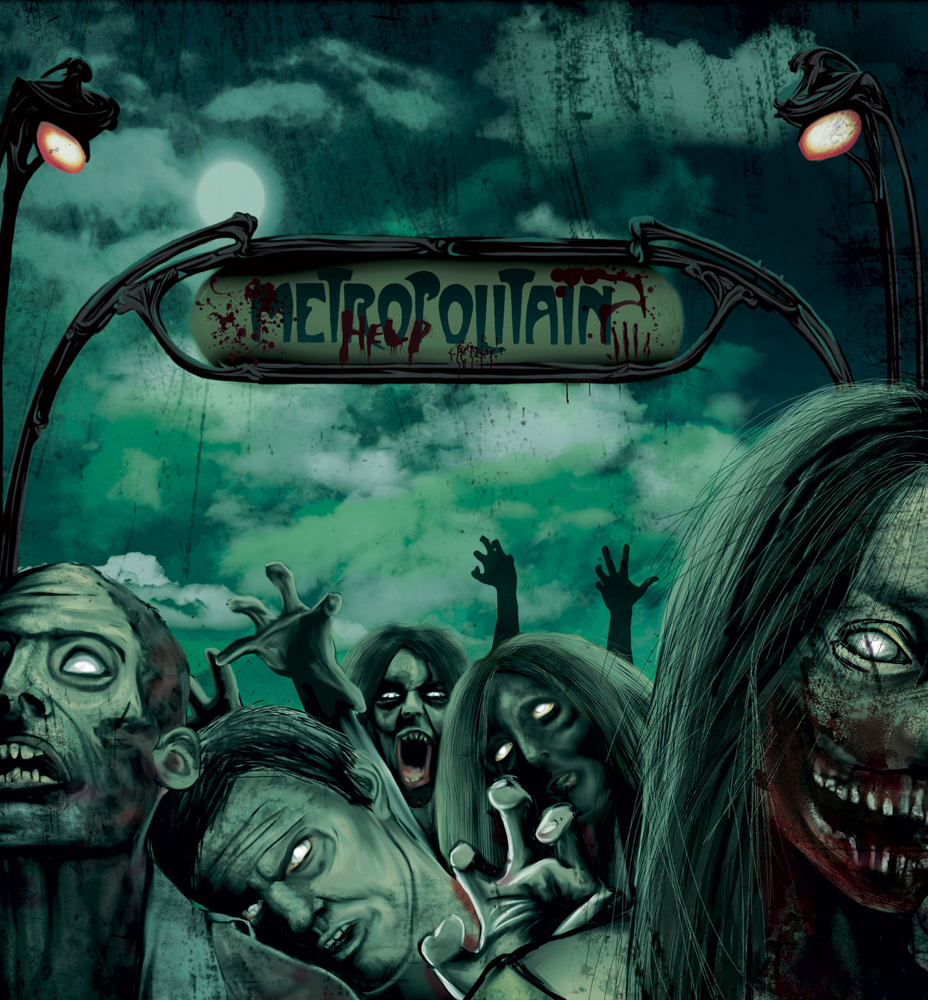

La date et l'heure de la Zombie Walk
La Zombie Walk est organisée chaque année vers octobre/novembre, cette année le rendez-vous est donné le
Samedi 7 Novembre 2026, à 13H00

La Zombie Walk est organisée chaque année vers octobre/novembre, cette année le rendez-vous est donné le
Samedi 7 Novembre 2026, à 13H00
place de la Bastille
75011
France
14:45—15:00
Rassemblement autour de la place de la Bastille
Tous les zombies se rassemblent sur la place
13:00—15h00
15:00—le temps de marcher
Nous marcherons tranquillement jusque la place de la Nation
Cette année, la Zombie Walk Paris n'aura pas de stand de maquillage pour vous zombifier ! Ce sera à vous d'être créatifs et de sortir les pinceaux pour vous faire plus morts que jamais ! Un maquillage réussi n'est pas forcément compliqué et onéreux à faire, vous pouvez voir différents conseils et tutos sur You Tube et sur le groupe FB Maquillage Zombie Walk Paris
Comme chaque année, nous vous rappelons que le port de toute arme et/ou réplique d'apparence réaliste est strictement interdit et puni par la loi. Comme l'an passé, les participants récalcitrants à cette règle de survie pour tous se verront repeindre leur arme en rose, et ce par ordre nécro-préfectoral. Il n'y aura aucune exception !
L'organisation de la Zombie Walk demande du temps, mais aussi un peu de budget pour la location du matériel, si vous souhaitez nous aider, n'hésitez pas à nous faire un ptit don, l'association La Mad est à but non lucratif et tout le budget réuni sera dépensé pour la zombie walk, si jamais par miracle nous dépassons par vos dons les dépenses courantes, nous avons beaucoup d'idées qui pourraient être sympa à faire pour la zwp (comme éditer des tshirts par exemple)
Notre email: team@pariszombie.com